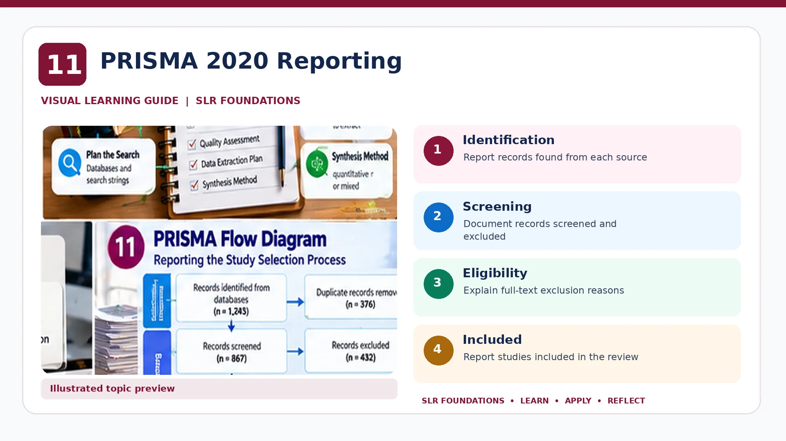

SLR FOUNDATIONS · PRE-HANDS-ON LEARNING
PRISMA 2020 & Search Reporting
Understand reporting standards without confusing them with review methods

Editable PRISMA 2020 resources
Download the editable workshop flow diagram and reporting checklist. These are teaching adaptations; refer to the official PRISMA resources for publication.
Editable PRISMA Flow Diagram
Edit identification, screening, eligibility and inclusion counts directly in Word.
Download editable DOCX ↓Editable Reporting Checklist
Track reporting elements and manuscript page references in Word.
Download editable DOCX ↓PRISMA 2020
PRISMA 2020 is a reporting guideline for systematic reviews. It supports transparent reporting of why the review was done, what was done and what was found. It does not replace a review protocol or prescribe one universal method.
PRISMA-S and PRESS
PRISMA-S helps report literature searches clearly. PRESS provides guidance for peer review of electronic search strategies.
Stage 1 search documentation checklist
- Database/platform and date searched
- Full database-specific search string and field codes
- Applied limits or filters
- Number of retrieved records and export format
- Changes to search strategy and rationale